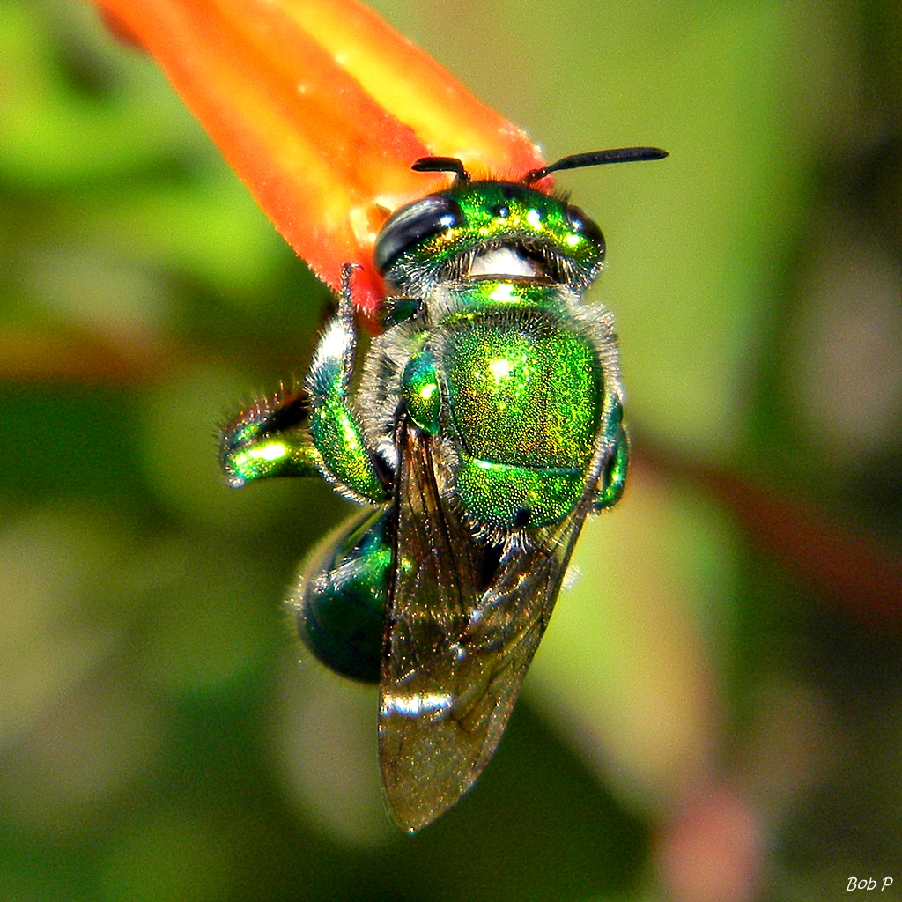

E aí, jovem! Abelhas solitárias são as "aventureiras solitárias" das espécies, saca? Elas curtem a solidão, fazendo suas casas, pegando comida e criando os filhotes sozinhas. Tem vários tipos dessas abelhas, cada uma com seu estilo e habitat próprios. E a parada delas é essencial pro esquema de polinização das plantas e pra manter a fauna toda variada.
Essa é a Abelha Euglossa Fimbriata

A Euglossa fimbriata é uma espécie de abelha que vive em locais tropicais e subtropicais, como o Brasil, Venezuela e outros países da América do Sul. Ela é conhecida como "abelha das orquídeas" porque tem uma relação especial com essas flores.
Essas abelhas são únicas porque os caras delas são meio "fanáticos por cheiros". Eles voam de flor em flor buscando aromas legais que as fêmeas gostam. Eles usam esses cheiros para conquistar as garotas. Parece até um encontro romântico de abelhas!
O mais legal é que, enquanto fazem isso, eles ajudam as orquídeas a se reproduzirem, carregando pólen de uma flor para outra. Ou seja, eles são como os correios da natureza, fazendo com que as plantas tenham filhotes.
Mas há um problema: a destruição do habitat delas e o uso de pesticidas estão prejudicando essas abelhinhas e as plantas que dependem delas. Portanto, é importante cuidar do ambiente e entender como as abelhas são fundamentais para a natureza e para nós também.